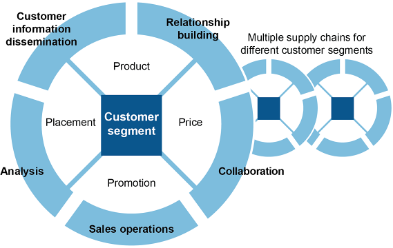
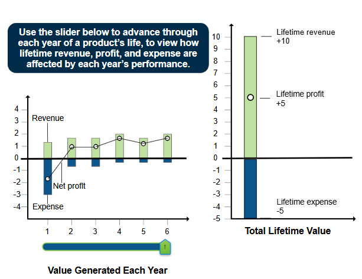
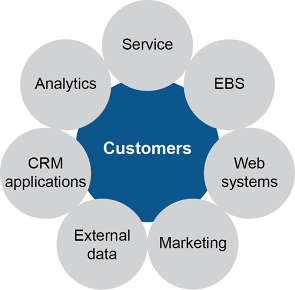
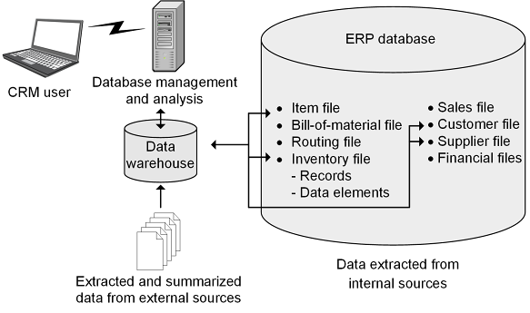
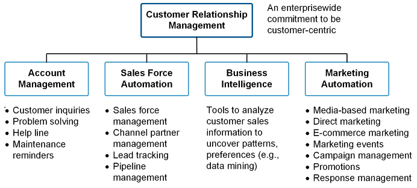

6.1.2 Overview: Scope of CRM and CRM Strategy
A CRM strategy defines how an organization initiates, develops, and sustains customer relationships. The scope of CRM covers four areas:
- Sales Operations: order taking, invoicing, call centers, returns — optimizing customer experience and collecting transaction data
- Analysis: data validation, customer segmentation, performance measurement
- Customer Information Dissemination: getting focused information to the right groups (supply chain partners included)
- Relationship Building and Collaboration: developing lifetime customers through staff training and experience optimization

Exhibit 6-2: Scope of CRM in Supply Chain
Lifetime Customers & CRM Components
Lifetime customers: lower total marketing costs (acquisition costs are front-loaded), easier to satisfy (technology enables deeper knowledge), and higher revenue/profit opportunities as relationships mature.

Exhibit 6-3: Development of Lifetime Value
Six components of CRM strategy (Exhibit 6-4):
- EBS (Enterprise Business Systems): technological backbone — customer database, transaction maintenance, order status, sales support, financial details
- Web systems: enables online browsing, ordering, payment, tracking
- Marketing: ensures customers know about products/services
- External data: supports collaborative partnerships with suppliers, resellers, channel partners
- CRM application: three elements — operations CRM, collaborative CRM, analytical CRM
- Service: post-sale follow-up and support

Exhibit 6-4: Components of CRM Strategy
CRM and Product Life Cycle

Exhibit 6-5: Product Life Cycle
- Development: VOC to shape product design; test with selected customer segments
- Introduction: high advertising spend; CRM supports promotional programs
- Growth: sustain customer care; use CRM to identify strong/weak segments
- Maturity: entice competitors’ customers to switch; retain existing base
- Decline: critical customer care; assure availability of service/parts for existing customers
CRM Core Technologies
Data warehouse: a repository of data specially prepared to support decision-making applications.
A Customer Data Warehouse (CDW) stores customer data separately from transactional systems for deeper analysis.

Exhibit 6-6: Example of CDW Interfacing with ERP
CDW benefits: strategic marketing, new product development, channel management, sales productivity, one-to-one marketing.
CRM technology tools (Exhibit 6-7):
- Account management: managing customer information for marketing and care
- Sales Force Automation (SFA): collects data from transactions/call centers; contact management, account management, opportunity management, quotation management
- Business intelligence: information about customers, competitors, products — transformed into insights
- Marketing automation: media-based marketing, direct marketing, e-commerce, campaign management by customer type (prospecting, vulnerable, win-back, loyalty)

Exhibit 6-7: CRM Technology Tools
Keys to Successful CRM Implementation
- Architecture determined early: avoid disconnected silos; aim for multi-enterprise integration
- System must enhance efficiency: make CRM tasks faster and easier, not more complex
- Coordinated implementation: cross-functional teams from every area
- Everyone trained: job processes redrawn; all staff trained at appropriate depth
- Measured against customer needs: will customers use it? Does it improve their experience? Does it allow personalization?
Four maturity levels of CRM integration: Disconnected → Interfacing → Internally integrated → Multi-enterprise integrated.
TERM / CONCEPT
ASCM definition of data warehouse?
ANSWER
A repository of data that has been specially prepared to support decision-making applications.
Click card to flip · Use arrows or shuffle to practise
Question 1
CRM systems primarily:
A.Manage warehouse inventory
B.Track and manage customer interactions, sales pipelines, and service history
C.Plan production schedules
D.Calculate EOQ
Question 2
Predictive analytics in CRM enables:
A.Order entry automation
B.Prediction of which customers are likely to churn (stop buying)
C.Accounts receivable management
D.Demand forecasting for production
Question 3
Net Promoter Score (NPS) measures:
A.Percentage of orders delivered on time
B.Customer loyalty and willingness to recommend, scored as Promoters minus Detractors
C.Total customer complaints
D.Average order value